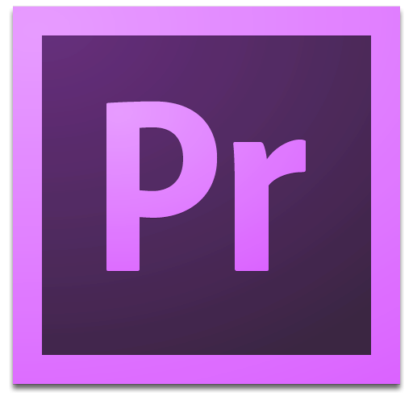
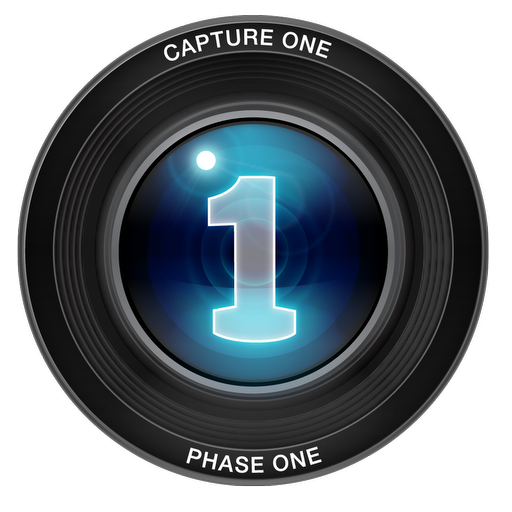
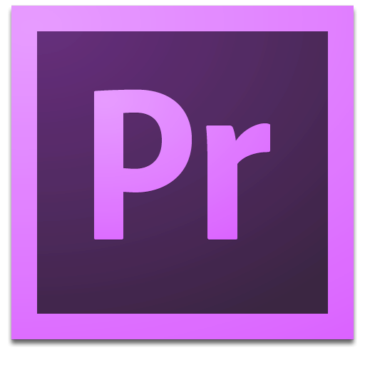
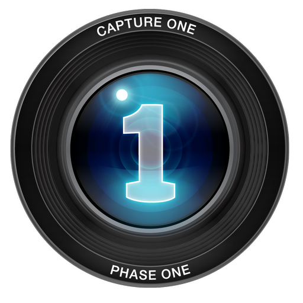

Hi. I'm Dominique, a photographer based in Chicago.


 




Through my experience and degree at School of the Art Institute of Chicago, I have developed my photography, design, photo editing, and lighting technique skills.

My name is Dominique Goncalves, and I am a photographer. I will graduate from School of the Art Institute of Chicago in May 2018. Through most of my time as a photographer I have been interested in documenting the music scenes and their commuinities, connecting with the musicians and with the fans. I also focus on youth culture in my conceptual work. I have worked with many bands and online magazines; two of the bands being Waters and Whitney and magazines such as Central Track and Urban Outfitters.